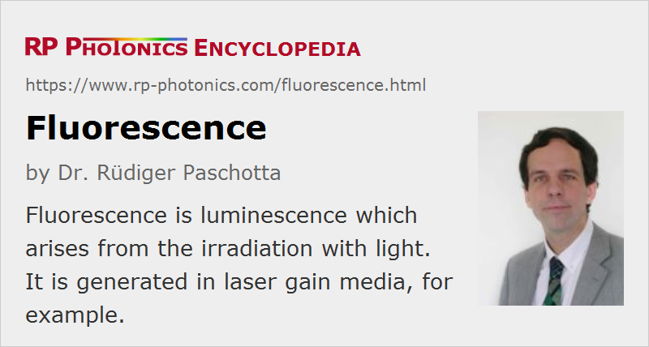

Fluorescence
Definition: luminescence arising from irradiation with light
More general term: luminescence
More specific terms: parametric fluorescence, superfluorescence
German: Fluoreszenz
Category: physical foundations
How to cite the article; suggest additional literature
Author: Dr. Rüdiger Paschotta
Fluorescence is a short-lived photoluminescence, excited by irradiation of a substance with light. The light hitting a sample puts atoms, ions or molecules in the sample into excited states (by absorption of photons), from where they decay into lower-lying states (e.g. their ground states) through spontaneous emission of fluorescence photons. This phenomenon is exploited for illumination, particularly in fluorescent lamps. It also occurs at a side effect in various kinds of optically pumped lasers and amplifiers, e.g. in solid-state doped-insulator lasers and amplifiers (including fiber lasers and fiber amplifiers), in optically pumped semiconductor lasers, and in dye lasers. The resulting radiation is called fluorescent light.
Substances emitting fluorescence, or sometimes just parts of larger molecules, are called fluorophores. Some artificial fluorophores may be added to samples in fluorescence spectroscopy.
Emission Spectrum
The optical spectrum of fluorescence light (see e.g. Figure 1) generally differs from that of the light which initially caused the excitation of the medium. A significant Stokes shift (difference in photon energies of absorbed and emitted light) can occur because a part of the excitation energy is converted to heat in the medium. For example, the excited atoms or ions may first undergo an optical or a non-radiative transition to some intermediate level, before emitting fluorescence light in a transition to the ground state, or to some higher-lying energy level. It is also possible that a cascade of emission processes occurs, i.e., a cascade of transitions to lower-lying energy levels; in that case, more than one fluorescence photon can be emitted for one absorbed photon.
In solid-state laser gain media, phonons lead to very fast thermalization within Stark level manifolds. As the emission occurs on a much longer time scale, the spectral shape of the emission spectrum does not depend on the exact wavelength of the exciting light.
Cases with resonance fluorescence – most often with atoms or molecules – are those not involving additional transitions, where the interacting atoms or molecules can be considered as simple oscillators with a certain resonance frequency. The emission wavelengths are then close to the excitation wavelength.
Fluorescence Decay
After excitation with a short pulse, the fluorescence decay is often of exponential nature with a decay constant which is called the fluorescence lifetime or upper-state lifetime (because the fluorescence lifetime is identical to the lifetime of the population in the upper level of an electronic transition). For so-called allowed transitions, the fluorescence lifetime is typically of the order of a few nanoseconds. In solid-state laser gain media other than semiconductors, one is often dealing with weakly allowed transitions, where the fluorescence lifetime can be much longer, e.g. microseconds or even milliseconds.
For very long decay times, usually involving triplet states with forbidden transitions, such luminescence is called phosphorescence. Is also the phenomenon of delayed fluorescence, which can involve a weak intersystem crossing to a triplet state and later back to the original singlet state.
Various processes can lead to pronounced non-exponential fluorescence decay, with a faster decay shortly after excitation and a slower decay later. For example, this can be caused by contributing atoms with different lifetimes, or by upconversion processes which are stronger for high level populations.
Competing Non-radiative Processes
In many cases, there are non-radiative processes which compete with fluorescence and reduce or even fully suppress it (→ quenching). In particular, multi-phonon transitions are very strong for level pairs with an energy distance which is at most a few times the maximum phonon energy of the host material. In other cases, energy transfer processes can deplete the population of a metastable level.
The quantum efficiency (or quantum yield) of fluorescence from some level is the average number of fluorescence photons obtained per ion which is put into the upper level. Solid-state gain media (e.g. laser crystals or rare-earth-doped fibers) often have laser transitions with a quantum efficiency very close to unity, whereas some levels (e.g. the lower laser level) exhibit virtually no fluorescence due to strong multi-phonon transitions.
Fluorescence in Lasers and Amplifiers
In the context of lasers, fluorescence in the laser crystal (or other gain medium) by spontaneous emission is lost for the laser operation, because only a tiny fraction of it goes into the laser resonator mode. The fluorescence lifetime for fluorescence from the upper laser level is usually called the upper-state lifetime. Fluorescence is the most fundamental reason why a certain laser threshold has to be overcome to achieve lasing (exception: thresholdless lasers). Note also that when the pump source of a laser is turned on, laser action normally starts from a tiny amount of fluorescence in the laser resonator mode, amplified to high levels in many resonator round trips.
In optical amplifiers, fluorescence can be even more important. In the form of amplified spontaneous emission (ASE), it may extract significant power and thus limit the achievable gain. It also determines much of the quantum noise contributions to laser noise and amplifier noise.
Fluorescence can be very important for the characterization of laser gain media:
- It indicates any radiative transitions from metastable levels (not only the upper laser level) and can be used for the measurement of the emission bandwidth, and thus also the gain bandwidth. Note, however, that reabsorption losses in quasi-three-level gain media and also excited-state absorption can cause the gain bandwidth to be smaller than that obtained from fluorescence spectra.
- When the quantum efficiency can be assumed to be near unity, the Füchtbauer–Ladenburg equation and similar tools can be used to calculate the magnitude of emission cross sections. Additional data concerning absorption can be obtained via McCumber theory.
- The temporal decay of the fluorescence after excitation (e.g. with a short pulse) can be measured in order to quantify the level lifetimes, in particular the upper-state lifetime.
- Fluorescence may reveal the presence of impurities, e.g. unwanted rare earth ions, and also parasitic processes such as cooperative luminescence.
- In fiber lasers and amplifiers, monitoring fluorescence intensities along the fiber allows the determination of parameters such as the pump absorption length.
Fluorescent light is also sometimes used for aligning a laser.
Application in Lighting
Fluorescence is widely used in fluorescent tubes for illumination purposes. The most common fluorescent lamps contain mercury vapor inside a glass tube, where an electric discharge excites the mercury atoms to emit mostly ultraviolet light. A fluorescent material (called the phosphor) on the inner surface of the tube absorbs the ultraviolet light and converts it into fluorescence light, mostly in the visible spectral region. The phosphor contains several substances mixed in such a way that the overall emission spectrum corresponds to white light (with the color tone adjusted according to the envisaged application). Although part of the energy of the ultraviolet light is lost in the phosphor, fluorescence lights are still several times more energy-efficient than incandescent lamps.
There are also light-emitting diodes (LEDs) which generate white light in a process that involves the excitation of a phosphor. In that case, however, the actual LED produces blue rather than ultraviolet light, and this blue light is partly converted to red and green fluorescence light in the phosphor, and partly emitted by the device.
Application in Solar Concentrators for Photovoltaics
Fluorescence in transparent polymer sheets, which are doped with some luminescent species, can be used for luminescent (or fluorescent) solar concentrators [2]. Sunlight hitting the polymer sheets from any direction can be absorbed and efficiently transformed into fluorescent light, which is partly trapped in the sheets and thus sent to the edges, where solar cells receive the concentrated radiation. Potentially suitable luminescent agents can be certain organic dyes and quantum dots. Further research is required to optimize the still limited lifetime of dyes under irradiation with sunlight and the quantum efficiency of quantum dots.
Fluorescent solar concentrators might be the basis for cheaper electricity from photovoltaic panels, as they allow to collect radiation from a large area while requiring only relatively small photovoltaic cells.
Using Fluorescence in Other Ways
Fluorescence light can be useful, e.g. for direct use for optical measurements, such as for measuring the transmission spectra of optical devices. It is also the basis of fluorescence spectroscopy, fluorescence microscopy and of optical refrigeration. By combining multiple types of emitting rare earth ions in an optical fiber, very broadband radiation can be generated [1].
Interactions via Fluorescence
Fluorescence of the single atoms, ions or molecules of a sample usually occurs in an uncoordinated manner, i.e., uniformly in all spatial directions and without temporal correlations between the emitted photons. However, certain conditions lead to amplified spontaneous emission (superluminescence) or superfluorescence, where this is no longer the case.
Parametric Fluorescence
A special kind of fluorescence, which is not related to the excitation of atoms or ions in a substance, is parametric fluorescence in nonlinear crystal materials. This effect does not involve the excitation of electrons in the media, but rather a nonlinear interaction. Such fluorescence occurs only as long as some pump light propagates in the medium.
Questions and Comments from Users
Here you can submit questions and comments. As far as they get accepted by the author, they will appear above this paragraph together with the author’s answer. The author will decide on acceptance based on certain criteria. Essentially, the issue must be of sufficiently broad interest.
Please do not enter personal data here; we would otherwise delete it soon. (See also our privacy declaration.) If you wish to receive personal feedback or consultancy from the author, please contact him e.g. via e-mail.
By submitting the information, you give your consent to the potential publication of your inputs on our website according to our rules. (If you later retract your consent, we will delete those inputs.) As your inputs are first reviewed by the author, they may be published with some delay.
Bibliography
| [1] | L. Di Labio et al., “Superbroadband fluorescence fiber fabricated with granulated oxides”, Opt. Lett. 33 (10), 1050 (2008), doi:10.1364/OL.33.001050 |
| [2] | W. G. Van Sark et al., “Luminescent solar concentrators – a review of recent results”, Opt. Express 16 (26), 21773 (2008), doi:10.1364/OE.16.021773 |
See also: fluorescence microscopy, fluorescence spectroscopy, fluorescent lamps, luminescence, spontaneous emission, amplified spontaneous emission, superluminescence, superfluorescence, upper-state lifetime, transition cross sections, optical refrigeration, McCumber theory, Füchtbauer–Ladenburg equation, parametric fluorescence, The Photonics Spotlight 2009-10-12
and other articles in the category physical foundations
|  |
If you like this page, please share the link with your friends and colleagues, e.g. via social media:
These sharing buttons are implemented in a privacy-friendly way!